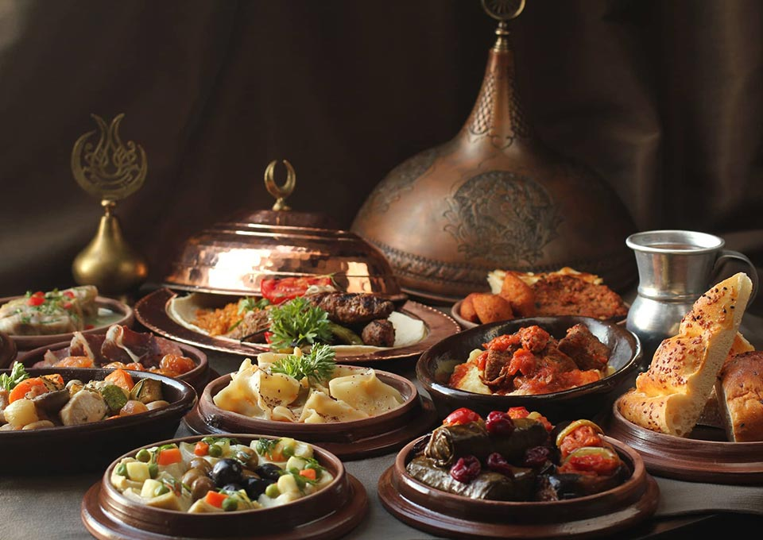

In this web page, you will see some dishes belonging to Ottoman/Turkish cuisine that are also commonly cooked in Middle Eastern/Balkan countries.
First of all, what exactly is Ottoman cuisine?
These dishes have been cooked in the magnificent palaces of the Ottoman Empire for centuries.
These dishes hold great cultural importance.
Many countries that were once within the vast borders of the Ottoman Empire still cook these dishes today.
 Karniyarik Recipe
Karniyarik Recipe